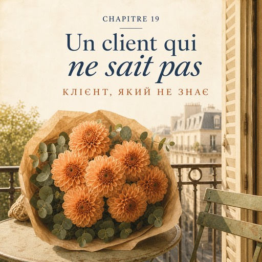

0:00
3:09
Натисніть речення, щоб почути його окремо.
Щоб слухати з підсвіткою — відкрийте сторінку в браузері.
Le mercredi 15 octobre — середа, 15 жовтня
Au milieu de la semaine, la rue de Bretagne est lente.
Посеред тижня вулиця Бретань повільна.
Les gens passent devant la vitrine et n'entrent pas.
Люди проходять повз вітрину й не заходять.
Solange n'est pas là : elle est chez le comptable jusqu'à cinq heures.
Соланж немає: вона в бухгалтера до п'ятої.
Karim change l'eau des seaux.
Карім міняє воду у відрах.
Deux seaux de chrysanthèmes sont près de la porte depuis vendredi.
Два відра хризантем стоять біля дверей від п'ятниці.
Deux clients en deux heures. À trois heures, un homme entre.
Два клієнти за дві години. О третій заходить чоловік.
Cinquante ans, un imperméable, un sac de sport à la main.
П'ятдесят років, плащ, спортивна сумка в руці.
Il regarde les seaux longtemps.
Він довго дивиться на відра.
— Bonjour. Je peux vous aider ?
— Добрий день. Можу вам допомогти?
— Bonjour. Oui. Enfin... je voudrais quelque chose de joli.
— Добрий день. Так. Ну… я хотів би щось гарне.
Il s'arrête. C'est toute sa phrase.
Він замовкає. Оце і вся його фраза.
« Quelque chose de joli », ça ne veut rien dire.
«Щось гарне» не означає нічого.
Il faut trouver le reste.
Решту треба знайти.
Karim, derrière le comptoir, ne bouge pas.
Карім за прилавком не рухається.
— C'est pour offrir ?
— Це в подарунок?
— C'est pour qui ?
— Для кого?
— Pour ma femme.
— Для дружини.
— Est-ce que c'est pour une occasion ?
— Це з якоїсь нагоди?
— Non. Ce n'est pas un anniversaire. Ce n'est rien du tout.
— Ні. Це не день народження. Це взагалі ніщо.
— C'est mercredi, c'est tout.
— Просто середа, і все.
— C'est une très bonne raison.
— Це дуже добра причина.
L'homme sourit, un peu surpris.
Чоловік усміхається, трохи здивований.
— Elle aime quelle couleur ?
— Який колір вона любить?
— Alors là... je ne sais pas. Attendez.
— Отут… я не знаю. Заждіть.
— Elle a un manteau orange. Elle le met tout le temps.
— У неї є помаранчеве пальто. Вона його носить постійно.
— Alors, orange.
— Тоді помаранчевий.
— Vous avez un budget ?
— Який у вас бюджет?
— Vingt-cinq euros, ça va ?
— Двадцять п'ять євро — підійде?
— Ça va très bien. Plutôt simple ou plutôt grand ?
— Цілком. Радше простий чи радше великий?
— Plutôt simple. Elle n'aime pas les bouquets chargés.
— Радше простий. Вона не любить перевантажених букетів.
Chaque question enlève quelque chose.
Кожне питання щось прибирає.
À la fin, il reste un seul bouquet.
Наприкінці лишається один-єдиний букет.
Il sait beaucoup de choses sur sa femme. Il ne le sait pas encore.
Він знає про свою дружину багато. Сам він цього ще не знає.
Natalia passe devant les chrysanthèmes sans s'arrêter.
Наталя проходить повз хризантеми, не спиняючись.
Elle prend sept dahlias orange. Un orange doux, pas trop fort.
Вона бере сім помаранчевих жоржин. Помаранчевий м'який, не надто різкий.
Elle ajoute un peu d'eucalyptus.
Додає трохи евкаліпта.
Simple, gai, discret. Pas triste.
Просто, весело, стримано. Не сумно.
Elle fait le paquet. Deux tours de ruban, comme toujours.
Вона пакує. Два оберти стрічки, як завжди.
— Ça tient combien de temps ?
— Скільки воно стоїть?
— Une semaine. Changez l'eau tous les deux jours.
— Тиждень. Міняйте воду кожні два дні.
— Sept dahlias, dix-sept euros cinquante. L'eucalyptus, quatre euros.
— Сім жоржин — сімнадцять євро п'ятдесят. Евкаліпт — чотири євро.
— Ça fait vingt et un euros cinquante.
— Разом двадцять один євро п'ятдесят.
Il paie par carte. À la porte, il regarde le bouquet encore une fois.
Він платить карткою. У дверях ще раз дивиться на букет.
— Je suis entré sans idée, moi. Et je repars avec le bon bouquet.
— Я ж зайшов без жодної думки. А виходжу з правильним букетом.
— Bonne journée !
— Гарного дня!
La porte se ferme.
Двері зачиняються.
— « T'as vu » quoi ?
— «T'as vu» — що?
— « T'as vu », ce n'est pas une question. C'est comme « regarde ».
— «T'as vu» — це не питання. Це як «дивись».
— Il entre, il ne sait rien. Il sort avec le bouquet de sa femme.
— Заходить — не знає нічого. Виходить із букетом для своєї дружини.
— C'est toi qui as fait ça.
— Це ти зробила.
— J'ai posé des questions, c'est tout.
— Я ставила питання, та й усе.
— Ouais. C'est ça, le métier.
— Ага. Оце воно і є — ремесло.
Il remet ses écouteurs. Fin de la leçon.
Він знову вставляє навушники. Кінець уроку.
Le magasin est vide.
У магазині порожньо.
Il est quatre heures moins le quart, et la rue est toujours aussi lente.
За чверть четверта, і вулиця така сама повільна.
Demain, quelqu'un d'autre va entrer et il ne va pas savoir ce qu'il veut.
Завтра зайде хтось інший і теж не знатиме, чого хоче.
Maintenant, elle sait quoi demander.
Тепер вона знає, про що питати.